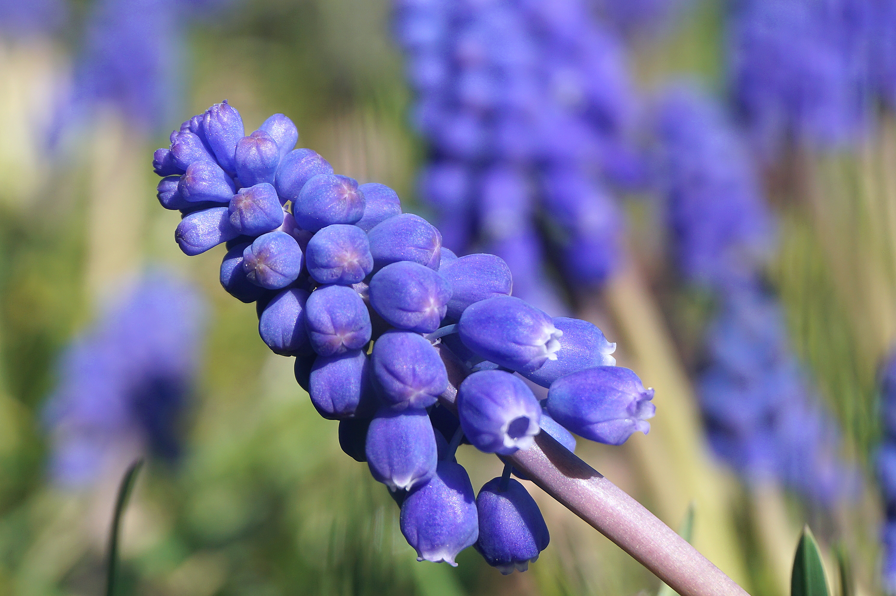

A fragrant plant, the hyacinth can be spotted mainly in the Eastern Mediterranean, and the genus can be identified especially with its clusters of blue and purple flowers that either curl out or stay in a bell shape.